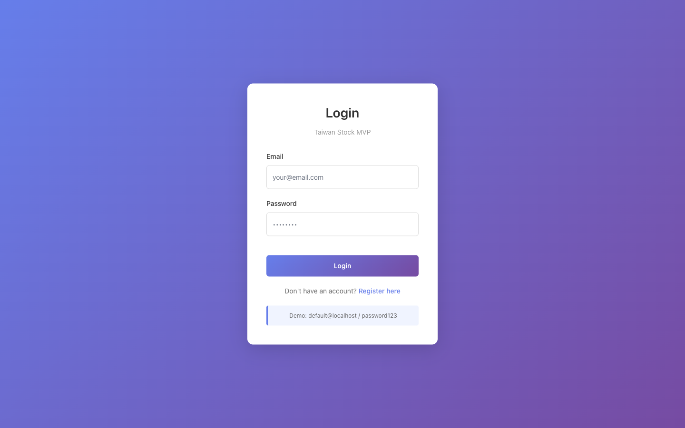
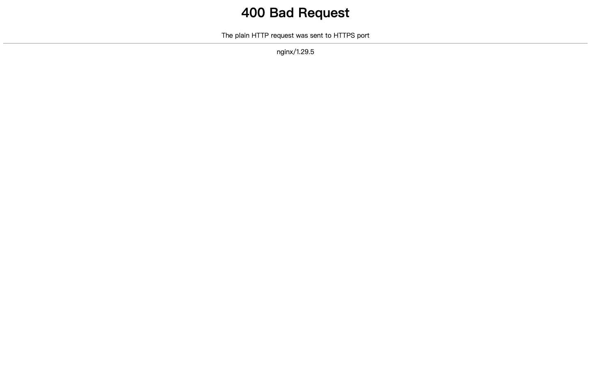
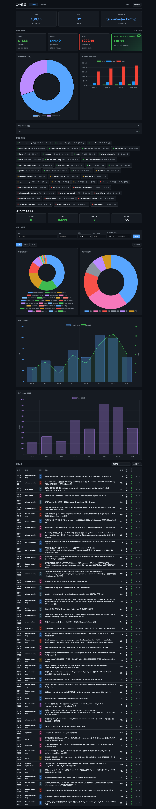
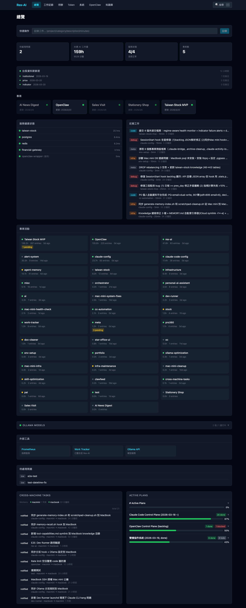

我是全端工程師，專注在 數據系統、 自動化和 AI 整合。 擅長用最少的零件解決問題 — 別人搭團隊花三個月的系統， 我一個人用 AI 輔助，幾天交付。
目前獨立運作，有一台 24/7 的 Mac mini 伺服器跑本地 LLM 和各種自動化服務。 用過 Python、TypeScript、React、FastAPI、Docker、PostgreSQL， 也熟悉 Ollama、Playwright、Telegram Bot 等工具。
如果你有需要自動化或數據視覺化的工作， 可以聊聊。

全端 SaaS — 50 支股票即時評分、ETF Alpha 排名、動量策略模擬交易、 KOL 績效追蹤、AI 多空分析。多用戶認證 + 資料隔離， 100+ API 端點、23 個前端頁面。

任務排程引擎 — 瀏覽器自動化、多步驟工作流、失敗重試機制。 透過 Telegram 遠端派發任務，整合 Claude Code 做 AI 驅動的自動化。

AI 輔助開發的工時追蹤系統。自動記錄每筆工作的分類、耗時、token 用量， 搭配 Web Dashboard 視覺化，支援週報檢討和效率分析。

個人 AI 系統的中控台 — 整合 Decisions API、服務健康監控、 Backlog 管理、跨機器任務派發。所有 AI 工具的運行狀態一目瞭然。
報表自動產生、資料定時抓取、通知推播。 你每天花 2 小時重複做的事，我幫你變成一鍵或全自動。
把 Excel、Google Sheets 或資料庫裡的數據，變成互動式 Web Dashboard。 即時更新、多維度篩選、手機也能看。
客服自動回覆、訂單通知、排班查詢、AI 問答。 串接你現有的系統，不需要換工具。
幫你評估哪些工作適合用 AI 自動化、選擇工具、建置本地 LLM。 保護資料隱私、降低長期 API 成本。